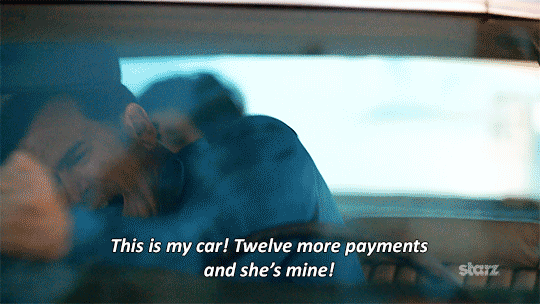
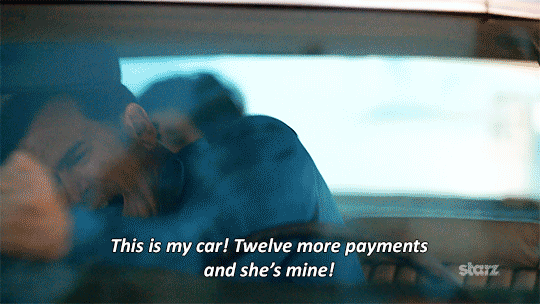

GIF: Old and New Practices and Popularity in Social Media
By Mao Thao

Overview
GIFs have become so popular that a regular user of the Internet cannot possibly avoid coming into contact with one. Its popularity is so vast; it is being used in journalistic means, through social media news sites such as Buzzfeed, which prominently uses GIFs a majority of its articles. Although it seems more reputable online sites such as the Washington Post have not picked up that GIFs yet, that is not to say that GIFs are not being used to appeal to online users by businesses and companies that want to appeal to an online audience and in social media.
GIFs are dominating social media. What has led to this change? The popularity of GIFs can be attributed to the change in how it has been used and how developers have changed their approach to designing websites. It was not too long ago that GIFs had a notoriously bad reputation, especially when thinking back to the era of MySpace, where headache-inducing GIFs ruined the user experience of a website. Now, GIFs are largely derived from videos. The end result: a much more visually appealing graphic animation that has allowed users to communicate through more visually creative means than ever before with more user-focused designed.
Theoretical Framework
Haas argues that the relationship between old and new technology is more complicated than what is typically portrayed. Haas’ interpretation of Lev Vygotsky’s concepts of the historical-genetic method and mediational means will be used to understand the historical significance of GIF and why it has progressed to where it is at now. Bijker’s theory of sociotechnical change, specifically contingent and constraint will be used as theoretical frameworks. Using these, I will look at the relationship between the old and new practices of GIF and how that has led to its popularity in social media. Lastly, how this has changed the way users communicate via social media in a cultural and social context.
The historical-genetic method looks at the historic development of an artifact in order to understand its current development. Haas redefines Vygotsky’s definition by adding technology into the mixture. She states that to understand how technology has influenced literacy, it proposes three points:
“(a) that multiple technologies for literacy exist, (b) that their history-of-use is complex and overlapping, and (c) that technology’s uses are tied intrinsically to other human activities” (Haas, 1999, p. 213).
Vygotsky’s mediational means looks at the cultural significance of psychological tools (sign systems) and how it mediates a relationship between the user(s) and their cultural and historical background (Haas, 1999, p. 212.)
Bijker’s the concept of contingency relates to the actors, or the individuals involved, and “acknowledges [the] human agency” while constraint is what limits the actor(s) and that these limits are accepted by the agency. Contingency and constraint were used to understand why technology appears to always be changing but yet still stays constant (Haas, 1999, p. 222).
Dispute with GIF animations
The issue with GIFs, in the context of old and new practices and how it has sparked its popularity in social media, would be its specifications. While useful and easy to use, GIF is outdated compared to other file formats such as PNG. Despite these limitations, GIF is still widely popular. To combat the limitations of GIF (such as color selections), GIFs are highly effective when design choices regarding websites and GIFs overall are taken into consideration. This maximizes user experience while providing users an outlet to use GIFs in its most creative form.
What is GIF?
GIF is a lossless compression image format created in 1987 by CompuServe. Also known as “Graphics Interchange Format,” GIF was perhaps the first of its kind. Using the LZW, Lempel-Ziv-Welch, compression technique, which reduces image size while maintaining image quality (“GIF,” 1987).
Since its twenty-eight-year reign, GIF has only been updated once, in 1989, only two years after its release. The original version, 87a, had specifications such as:
- LZW compression,
- interlacing,
- a color palette of up to 256 colors,
- ability to store multiple images (Leurs, n.d. and Edvardsen, n.d)
Version 89a added additional features to GIF such as:
- transparency,
- delay times,
- Application Extension Blocks (Leurs, n.d. and Edvardsen, n.d)
Overall, GIF’s specifications allow users to compress images without losing the image quality. GIF’s ability to store multiple images also gave users the ability to create animated GIFs through this feature.
History
Steven Wilhite, whom worked for CompuServe, developed GIF. In an article published in CompuServe’s magazine, Online Today after the release of GIF, it pointed out hardware compatibility and downloading and uploading images within a short amount of time as reasons for its creation. The article described GIF as, “a universal exchange format for high-resolution graphic images [that] is available to microcomputers without regard to hardware compatibility” (“Computer users,” 1987). Before GIF, users did not have a way of sending graphics without having to worry about whether format compatibility would even allow them to view graphics (“Computer users,” 1987).
As GIF gained popularity among computer users, it was hit with controversy in 1994 when CompuServe and Unisys announced a licensing agreement that would require developers to pay a fee to use the LZW compression technique (Battilana, 1995). Unisys held the patent to the LZW technique and pursued creators and developers seeking to use the technique. The response from the online community was very negative. CompuServe tried to create a version of GIF that did not include LZW, eventually, resulting in the creation of PNG, “Portable Network Graphics." It seemed, at one point that this would be where the popularity of GIF ended and PNG started up. However, due to additional browser support by Netscape Navigator and Microsoft, GIF thrived and while it seemed that GIF would be replaced at one point, GIF became instantly irreplaceable. Especially because PNG still does not support animation (Battilana, 1995).
Old practices of GIF
Tracing GIF’s history, it was originally created so users could have a way of transferring or utilizing a technology that would allow everyone to be able to view and transfer graphics. CompuServe’s main goal was to reach a point where the “real-time transfer of images” became reality. Among its abilities were other innovative opportunities such as “text and images to be scanned simultaneously, rather than being stored separately.” Combined with faster speed, GIF made online slide shows a possibility (“Computer users,” 1987).
At the time of its creation, GIF was a groundbreaking technology. Over the years, GIF’s became more commonly used by the public, not only in a technologically heavy environment, but also by those who sought its use in an entertainment and creative sense. It spread to a more mainstream audience: social media users.
Olia Lialina, a Russian Internet artist, defined three distinct ways that GIFs were used and how it has changed over the years. In the 1990s, “GIFs contain classic animation; the backgrounds are transparent so they can be used in many graphical contexts.” Whereas post 2001 saw “Big, motionless, glittering (or other automatically generated) graphics used on Myspace and other PimpMyProfile-style social networks” (Alfonso III, 2012). Doing a simple Google search for Myspace GIFs brings up examples such as this:


Imagine browsing a website that used animated GIFs like the ones above. The quality of these GIFs aren't the best, as Lialina defined GIF cultural trends post 2001. However, these GIFs were created with the intent to entertain and as an added visual element to enhance the user's overall experience while on a website. These graphics are a representation of the early attributes that gave GIFs a notoriously undesirable reputation.
Even at this point, GIFs were being used as a form of entertainment. In social media, it was a way of enhancing and decorating accounts, such as in Myspace. In the examples shown, GIFs were flashy and sometimes only consisted of words to maybe describe or emphasize something. According to Quora, a website consisting of experts in their fields answer questions posed by users, Carlos Ribeiro described animated GIFs as “something to be ashamed of: bad graphics, crude cartoon-style animations, [and] solid colors [etc.]” (Ribeiro, 2012).
A Google search of "myspace GIFs" resulted in the above images of common GIFs used in Myspace. GIFs during this time are now considered amateurish and not aesthetically pleasing. The user interface of Myspace was not effective and the overload of animated GIFs contributed to the bad user experience.
According to Jim Boulton’s (2014) article 9 Design Ideas That Shaped The Web, GIF did not truly become popular until 1996, which was also around the time when Netscape Navigator 2.0 added support for animated GIFs. Boulton (2014) summarized the calamity of web design in the 1990s as “[competing] for space within frames and tables. At this point, the web was also still considered largely text-based with little focus on how users would actually navigate and use a site (Dilger, n.d., p. 216). It was during this time, the late 1990s to early 2000s, that more developers started using grids and templates (Quaintance, 2013). This change would eventually lead to better practices of GIF and web design that focused on the user experience.
New practices of GIF
GIF has grown to become a major part of social media, from its integration first in Myspace to newer social media platforms now. New practices use GIF differently compared to old practices. Although, as Haas (1999) differentiates in her argument and as Bijker's concept of contingency and constraint, similarities still exist between old and new practices (p. 212). This is also the same with old and new practices of GIF.
New practices involve a more detached integration between GIF and the overall design of a site. In Olia Lialina’s last distinction of GIF practices, GIFs are presently in the form of “Looped sequences made from video captures of movies or TV shows, distributed in blogs, not integrated into the page design surrounding it” (Alfonso III, 2012). While taking a minimalistic approach to design so the user can focus more on animated GIFs and any content that follows it, new practices still share the same core beliefs as old practices. To create a format that is easy to use, widely supported, and for entertainment purposes.
 

Animated GIFs are derived largely from video content. Most of the examples above originated from television. Searching Tumblr or animated GIF content websites such as Giphy.com will more than likely provide search results of GIFs taken from movies, TV shows, or televised events. Specific scenes are taken out and put on a loop, to be played over and over again. Eppink (2014) writes that GIFs became a way for users to communicate with one another via being used in response or to respond to online content (p. 303). Many GIFs include accompanying text, whether separately from the GIF itself or included within the GIF, this makes it easier for users to incorporate it in any sort of context the user desires.
Many social media sites have changed their user interface to place a focus on the content, e.g., animated GIF, rather than cluttering the interface. Facebook, for one, was initially reluctant to introduce GIF into its UI due to Myspace’s UI failure (Eppink, 2014, p. 302). However, even Facebook, perhaps the largest social networking site right now, could not continue to refuse its users the opportunity to post and share animated GIFs.
Tumblr, on the other hand, is credited with “igniting mainstream interest in the GIF as an aesthetic form” (Eppink, 2014, p. 302). The above image is a screenshot of how Tumblr's interface looks like to its user. Also called the dashboard, the site is devoid of advertisements and other distractions that can ruin the user experience. Tumblr follows the guidelines of minimalism, similar to Facebook. Located in the center is where the main content posted and shared by users'. While the sides are empty except for recommended blogs and a fixed navigation bar is located. This gives focus to the content, or GIFs, with the interface design as a supplement to usability, making it easy for users' to navigate and use the site.
Tumblr actively uses GIFs as a part of written conversations. Their users are able to publish written content and accompany that with animated GIFs (Eppink, 2014, p. 302). GIFs are a way for social media users to interact even more with each other with an easy to navigate user interface. Tumblr’s current interface is minimal and easy for users to use. Its approach to designing a site and how animated GIFs are created have, together, created a simple method of supplying a visual aid to digital content.
In comparison to old practices, these (new) practices have changed overtime. Users have found more creative means of using GIFs and web designing overall has drastically improved. Good user-focused design combined with slicker animated GIFs have also revolutionized the GIF format. GIF’s ability to create animated looping graphics is perhaps the main reason how it has managed to stay on top throughout its twenty-eight year history. The overall simplicity of GIF and its widely supported format are why it is still being used. Despite better and far more sophisticated formats that can be used in place of GIF, many users still choose GIF.
Popularity in social media

Graig Uhlin (2014) connects the rise of GIF with social networking; that the “nature of the GIF is to circulate, and it therefore thrives in a digital ecosystem build around sharing, retweeting, and following” (p. 525). A study on social media use conducted by Pew Research found that 65 percent of adults are using social media. The largest users of social media fall between the ages of 18-29, with 90 percent users from this age range. 77 percent of users within the ages of 30-49 are also using social media. Social media is not only targeted towards a specific age range, but attracts users within a wide range (Perrin, 2015, p. 4).
An effective GIF is one that is shared among others, becoming a part of "cultural conversation," where users are able to relate a certain GIF to specific moments in their own personal lives (Eppink, 2014, p. 301). GIFs are much more efficient at connecting users to a shared emotion or event. Uhlin (2014) describes the link between films and GIFs as having to do with fascination. That GIFs fascinate the viewer by looping, which places more emphasis on "facial expression or the gesture—a person's raised eyebrows, or surprised double take, or missed high five" (p. 520).

This is perhaps also why Oxford Dictionary declared GIF the word of the year in 2012. GIFs have spewed countless viral memes and animated videos. Users are able to parody and play on loop on memorable moments. GIFs are successful and entrancing because it allows users to connect with a visual aid when reading or scrolling through content.
Its technical abilities are also reasons for its success in social media. By providing a way for social media users to create fun, interesting 'reactions,'' or visual proponents to what takes place online through features such as looping animation, where the user isn't required to press play like with typical videos, and the fact that it is support on many browsers, making it an easy to create and easy for users to view. GIF's universal appeal, culturally and technically, is why it is still the go-to format. Without social media, the popularity of GIF may not be at its peak like it is today.
Theoretical framework analysis
Historical-genetic method
GIFs, despite issues with user experience, provide entertainment and are a fun way for users to enhance their chosen methods of communicating content. Haas (1999) stated that the “Vygotskian approach to the study of technology, then, suggests (a) that multiple technologies for literacy exist, (b) that their history-of-use is complex and overlapping, and (c) that technology’s uses are tied intrinsically to other human activities (p. 213).
Tackling this approach and applying it to the popularity of GIF in social media based on old and new practices, the historical aspect of GIF is an important one. Its developers sought an easier way of compressing multiple files to make the transfer of data easier during a period where Internet speeds were slow and uncompromising. Thus GIF was created with these limitations in mind and although most users may not recognize this, the reasons for the development of GIF are still very prominent today.
GIF was created to be easy and simple to use. Even now, GIF still stands at the top of most formats because users can easily make animated graphics compared to creating videos. GIF has auto-looping, can be expected to work in any setting or browser, and overall fun (Beck, n.d.). Taking into account that there are also now other options of image formats to use besides GIF, such as PNG. Though most social media users use GIF, there are also those who choose to use other methods of creating images and graphic animations.
Lastly, how users choose to use GIFs as a supplemental visual aid to their content (literacy) further emphasizes why GIFs have become so popular today. By trying to understand the historical-genetic method, Vygotsky describes narrows down to one point. That although how GIFs are used has changed vastly, GIFs had been and will still most likely be used as a form of entertainment and of expressing something of the user’s own personal thoughts.
Mediational means
Vygotsky’s concept of mediational means, which Haas (1999) describes as “a technological change [that] cannot be a simple replacement of one technology with another—nor even an historical rupture between technologies—because technology is anchored so closely both to individual histories and to cultural practices” (p. 212).
GIFs are not simply replaced by old and new methods of use. Instead, the change from old to new practices is an adaptation of how it has been used. Historically, GIFs are still being used as a form of entertainment, as a visual aid to content online, and a way of expression for users. These core beliefs still exist today based on social media uses of GIFs. Mediational means also “carry cultural power and cultural history, but they are always instantiated in specific ways in actual use” (Haas, 1999, p. 212).
Contingency and constraint
GIF is an interesting format to say the least. Contingency and constraint are used to help understand why technology is always seemingly changing yet still remains constant. In the case of GIF, it is a technology that could be considered one of the first of its kind. Eventually branching off and influencing other forms of technology similar to it yet with better specifications. PNG, for example, is considered by most developers to be the superior alternative to GIF, an outdated format that should have been replaced by PNG long ago.
Based on the analysis of old and new practices of GIF, GIF is a constant yet changing technology. Changing in how users have approached using it while GIF as a technology has remained the same since 1989. Every aspect in the development and history of GIF has been due to constraints made by other technologies of its time. GIF was created in response to the lack of versatile technology that could display graphics in various computer hardwares. Despite the scandal of the LZW patent, GIF still thrived because developers made the conscious decision to include it in Netscape Navigator 2.0. Changes in web designing contributed to increased popularity of GIF use because animated GIFs were, for once, not competing with other components of a website. Websites such as Tumblr were created almost solely focusing on animated GIFs and its overall web layout emphasized this.
Despite newer and better available options of graphic formats, GIF is still being used because it is simple to use, provides looping animation, and maybe because its developers have created a technology that still meets the needs to its users 28 years later.
Resources
Alfonso III, F. (2012, May 3). The animated history of the GIF. The Daily Dot. Retrieved from http://www.dailydot.com/entertainment/gif-history-steve-wilhite-olia-lialina-interview/.
Battilana, M. (1995, January 27). The GIF controversy: a software developer's perspective. Retrieved October 26, 2015, from http://cloanto.com/users/mcb/19950127giflzw.html.
Beck, D. (n.d.). GIFs as Documentation. Retrieved December 4, 2015, from http://gifs-as-documentation.readthedocs.org/en/latest/
Boulton, J. (2014, August 6). 9 design ideas that shaped the web. Fast Company. Retrieved from http://www.fastcodesign.com/3034030/9-design-ideas-that-forever-changed-the-web
Compression Methods: GIF vs. JPEG vs. PNG. (n.d.). Retrieved December 4, 2015, from http://www.ou.edu/class/digitalmedia/articles/CompressionMethods_Gif_Jpeg_PNG.html
Computer users choose GIF. (n.d.). Online Today. Retrieved October 26, 2015, from http://www.gsbrown.org/compuserve/computer-users-choose-gif/
Dilger, B. (n.d.). tableing the grid. (n.p.) 213-225. Retrieved from Professor’s course syllabus
Edvardsen, S. (n.d.). GIF: a technical history. Retrieved October 26, 2015, from http://simenge.tumblr.com/post/16976438906.
Eppink, J. (2014). A Brief History of the GIF (so far). Journal of Visual Culture, 13(3), 298-306.
GIF Graphics Interchange Format. (1987, June 15). Retrieved October 26, 2015, from http://www.w3.org/Graphics/GIF/spec-gif87.txt.
Haas, C. (1999). On the Relationship Between Old and New Technologies. Computers and Composition 16(2), 209-228.
Leurs, L. (n.d.). The GIF file format. Retrieved October 26, 2015, from http://www.prepressure.com/library/file-formats/gif.
Perrin, A. (2015). Social networking usage: 2005-2015. Pew Research Center, 1-12.
Ribeiro, C. (2012, March 7). Retrieved December 3, 2015 from Quora: https://www.quora.com/Why-are-animated-GIFs-so-popular
Uhlin, G. (2014). Playing in the Gif(t) Economy. Games and Culture, 9(6), 517-527.
Quaintence, M. (2013, June 28). A brief history of the GIF. [Author’s archived works]. Retrieved from http://morganquaintance.com/2013/06/28/a-brief-history-of-the-gif/